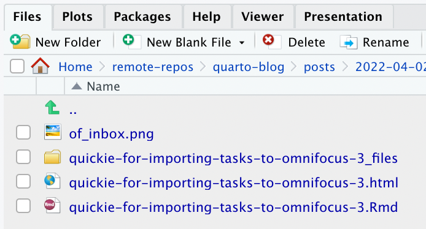

Porting slinberg.net from Distill to Quarto
Quarto: all the cool kids are doing it.
Setting aside the whys, this is a narrative of the hows - narrating the conversion of this site from Distill to Quarto as I go. This process was done with RStudio version 2022.07.11.
The process so far
Up to this point, the steps have been:
- Use RStudio to create a new “Quarto Website” project, which I inspiringly named
quarto-blog, which will also be the Github repository name - Separately download the standalone Quarto CLI, for purposes yet to be determined
- Read a couple of the early Distill-to-Quarto narratives, such as
- Set a few of the basic options in the site’s
_quarto.ymlfile (title,description,site-url, etc) - Created this as-of-this-typing-unsaved blog post as a new Quarto Document inside the project
- Check RStudio’s
Render on Saveoption in the file header, which quickly rebuilds the skeletal site on saves (of this file)
Creating a (this) blog post
So one immediate difference in terms of workflow is that the Quarto CLI doesn’t have - as of version 1.1.251, anyway - commands for creating blog post files. In Distill, you would say create_post("Foo") in the RStudio console, and that would create a skeleton with some base infrastructure, some automatic date-fu, etc. It would be easy enough to build a quick utility for doing this, but I kind of like that a blog post appears to just be a file (OK, a directory with an index.qmd file) inside the top-level posts directory.
So I’m going to save this file in the path posts/2022-10-01_distill_to_quarto_part_1/index.qmd, and that’s all that’s needed to make it a blog post. Yes, I’m typing out the date and title by hand, which is slightly more tedious than Distill, but I also know there’s nothing special going on under the hood when I add this file.
Why name the folder …distill_to_quarto_part_1 instead of just distill_to_quarto? Because I’m pretty sure I read somewhere that there’s a context where blog post titles can be disambiguated from their date prefixes, and so I want the title to be unique enough to withstand that if I add another similarly-titled post in the future. Not feeling super confident about this decision so far, but there it is.
(See That pesky first image in Appendix A below for the first snag: the first, or “listing”, image, and a pathname problem in Quarto.)
Getting the groovy table of contents
The table of contents (to the left in desktop mode) automatically appears once you have headers in the document structure. Each document’s (or post’s) title is rendered as an h1 tag above the body, but you need to have at least one h2 tag for the table of contents to appear.
To make this work in the posts directory (or presumably any directory), it needs to be specified in the directory’s _metadata.yml file (so in this case, posts/_metadata.yml) like this:
# Default for table of contents
toc: true
toc-title: Table of contents
toc-location: leftI believe that was there by default; it could be moved over to the right if you wanted something else in the left margin, like a site directory or something.
Github links
At least in the default configuration, this is also where your github links configured for this specific page will appear. Unfortunately, that means they won’t appear if your document lacks h2 tags, and consequently the table of contents isn’t built. I’d prefer to have these links appear regardless, and separate from the table of contents; putting that on my mental list of things to figure out.
Deleting the two sample posts
Now that this document is saved, establishing the blog structure, let’s nuke the two sample posts the site was initialized with; this, happily, is just a matter of deleting the directories posts/post-with-code and welcome.
Just deleting the directories re-renders the site, and they’re gone. Nice that there’s nothing else to that.
(Doing this did appear to confuse RStudio the next time I saved this file, though, and caused a new render process to start, stranding the prior preview tab in my browser and opening a new one. Still a few early-launch kinks to work out here, unsurprisingly…)
PS. WHOA! that image is way too big. Let’s scale it down. Change the … do we still call this snippet rmarkdown? … from this:
to this:
{width=50%}That’s better. That was a screengrab from a high-res display, so downscaling it by 50% was the right approach.
Create the missing repo and push
This is all going fine, but I haven’t actually created the GitHub repo yet, so now it’s time to do that. Once I’m happy with how it looks, I’ll need to update the publishing process to unhook the distill-blog project from my domain and replace it with this one, but for now I just want to be able to push the project.
Created the public project as “quarto-blog”, and now from the terminal:
git remote add origin git@github.com:stevelinberg/quarto-blog.git
git add .
git commit -m "Initial commit"
git push -u origin mainMigrating a post from the Distill blog
Posts are just directories, so we’ll copy the last old post from the distill project into the posts directory and see what we need to do to make it work.
cp -r ../distill-blog/_posts/2022-04-02-quickie-for-importing-tasks-to-omnifocus-3 posts/Note: if you’re a command-line wonk like me and not dragging-and-dropping in a UI, be careful not to include the trailing slash on the Distill post directory in the above command, or it will dump the contents of the old post’s directory into your posts directory, which is not what you want at all.
PS. groovy warning box above! Quarto is built on Bootstrap 5 (at present), which means we get yummy candy like that for free:
:::{.callout-important}
Note: if you're...
:::Anyway, now we’ve got the directory for a single Distill post copied into the Quarto posts directory, and we need to convert it so Quarto will render it. What do we need to do?
1. Delete the extraneous files
Here’s what we’ve got:

This will vary a bit by post content, but of these, the two we want are the .Rmd file, which is the original blog post content from Distill, and the supporting png image. The .html file can go, and the …_files directory (full of Javascript files) can go.
Then we rename the .Rmd file to index.qmd, and we have this:
2. Update the post’s YAML header
The old YAML header for the Distill blog looks like this:
---
title: "Quickie for importing tasks to OmniFocus 3"
description: |
Copy and paste formatted text to mass-create tasks.
author:
- name: Steve Linberg
url: https://slinberg.net
date: 2022-04-02
output:
distill::distill_article:
self_contained: false
preview: https://www.omnigroup.com/assets/img/icons/omnifocus-web@2x.png
categories:
- omnifocus
---Some of this will work in Quarto, some stuff has to be changed or removed. The current, very simple header for this post is:
title: "Porting slinberg.net from Distill to Quarto"
date: "2022-10-01"
categories: [quarto, distill, blog]
image: quarto.pngSo we can keep title and date in the original header. I don’t remember why the optional description attribute led with a vertical bar and a newline; the author tag can be deleted, as it will inherit the default values from posts/_metadata.yml; the output section can be deleted, the preview attribute can get quoted and renamed to image, and the categories tag gets pulled up to a single line, a square-bracketed list of categories. I’m adding “blog” as a category to blog posts, so far, since it will give another option for filtering blog posts as separate from static content on the site; not totally sure this will be needed, but going with it for the moment.
The updated YAML header now looks like this:
---
title: "Quickie for importing tasks to OmniFocus 3"
description: "Copy and paste formatted text to mass-create tasks."
date: "2022-04-02"
image: "https://www.omnigroup.com/assets/img/icons/omnifocus-web@2x.png"
categories: [blog, omnifocus]
---The description attribute, if present, will be used instead of a content preview on the listing page.
3. Nuke the knitr setup block
(For the life of me, I cannot remember, figure out, or google how to quote markdown within markdown, so to make this render I’m changing the backticks to single-quotes:)
'''{r setup, include=FALSE}
knitr::opts_chunk$set(echo = FALSE)
'''Delete that block, and any other extraneous knitr stuff unless you know why you need it.
Save and render. For this post, we’re done; it’s in and looks good. The blog page now looks like this:
4. Commit!
Don’t forget: commit early, commit often:
git add posts/2022-04-02-quickie-for-importing-tasks-to-omnifocus-3/
git commit -m "migrate old post"5. Rinse and repeat
Now, do the same process with the rest of the posts. I don’t have that many to move, so doing it manually isn’t too tedious, but it could be scripted for a lot of content if needed.
Note: by not renaming the post directory, and by virtue of the fact that both Distill and Quarto use /posts as the top level for blog posts by default, the URLs for the posts won’t change when we switch. It’s rude to break your working URLs when migrating (even though the number of humans who correctly care about this is vanishingly small), so this is good news. If your posts directory will be called something else, or basically if anything changes, you should set up redirects for your old URLs so they point to the new ones.
(optional) Configure for Github Pages
If you’re hosting on Github pages, there are a couple of additional things to do:
1. Set output to “docs”
By default, the site will render to the directory “_site”. Github Pages, where I’m presently hosting slinberg.net, publishes from the “docs” directory, so we need to tell Quarto to do that.
In _quarto.yml, add “output-dir: docs” to the project section, as shown:
project:
type: website
output-dir: docsRebuild the whole site from the terminal, in the root directory:
quarto renderDelete _site from your filesystem and repo, and add the “docs” directory:
git rm -rf _site
git commit -m "Remove old _site directory"
git add docs
git commit -m "Add docs directory"2. Create and commit a .nojekyll file
Github requires the presence of a file called .nojekyll to prevent rendering with Jekyll, Github’s site generation tool. Again, from your site’s root:
touch .nojekyll
git add .nojekyll
git commit -m "Add .nojekyll file"3. Create the CNAME file if you’re using a custom domain
If you are using a custom domain name (like slinberg.net), you must also create a file called CNAME in your site’s root, with the domain name in plain text followed by a carriage return. Of course, you also have to own the domain and have it pointed at Github correctly, a topic we’re not covering here. The domain name will not work correctly without this file.
Other conversion notes
Other unordered odds and end from the porting process:
Hashpipe syntax
One of the nice things about Quarto is much more readable chunk options via the ‚Äúhashpipe‚Äù syntax (# = ‚Äúhash‚Äù, | = ‚Äúpipe‚Äù, so #| = ‚Äúhashpipe‚Äù üôÑ). For example, we can turn this heavy thing:
{r echo=FALSE, fig.cap="Figure from
[The Visual Display of Quantitative Information](https://www.edwardtufte.com/tufte/books_vdqi),
p. 118", out.width=400}
knitr::include_graphics("badgraphic.png")Into this more readable construct:
{r}
#| echo: FALSE
#| fig-cap: Figure from [The Visual Display of Quantitative Information](https://www.edwardtufte.com/tufte/books_vdqi), p. 118
#| out.with: 400
knitr::include_graphics("badgraphic.png")… in theory.
In practice, as of this writing, there’s a bug in Quarto that prevents this from working correctly in .qmd files, so… for the moment, we wait and keep it in the former style.
.Rmd files still render
I was a little surprised to see that my non-converted blog posts, copied straight over from the Distill blog and prior to the cleanup for Quarto, still rendered just fine. I guess that’s good, but I wasn’t expecting it. I’m still going to clean them up.
Appendix A: problems
Rather than interrupt the basic narrative above, let’s stack the problems we hit along the way down here.
That pesky first image
One of the basic concepts in blogs and blog listings is the all-important thumbnail image that is used on the listing page.
There are basically two ways to implement this in Quarto: either explicitly specify it with the image atrribute in the YAML section of the post’s index.qmd file:
image: "image.jpg"or, omit this attribute, and in that case, Quarto will use the first image it finds in the post body (if any). The difference is: if you only want to use the image on the listing page, but not have it appear in the post itself, put it in the YAML header; if you want it to be used on both, then omit the YAML header and put it inline.
The problem is that if you do the latter, and the image is right at the start of the post (a header image, in other words), it will not render correctly if it happens to be within the range of the preview text (which doesn’t appear to be visibly configurable in Quarto, but it’s more or less the first line or two); this is because it doesn’t convert the filename path to a global path. It does in the listing itself, which is odd. You can see the result here, from one of the sample posts; the original code is:
This is the first post in a Quarto blog. Welcome!
But it we reverse it to put the image above the text:

This is the first post in a Quarto blog. Welcome!We get this on the listing page:
This is Quarto failing to adjust the image’s pathname in the listing, though it does render the image correctly to the right as part of the listing structure.
This can be worked around with the simple but ugly hack of fully specifying the image’s pathname, as in:

This is the first post in a Quarto blog. Welcome!but
- Gross, and
- You probably don’t want an inline image from the body appearing in the listing preview anyway.
Hopefully this issue will get resolved at some point.
Footnotes
RStudio 2022.07.1+554 “Spotted Wakerobin” Release (7872775ebddc40635780ca1ed238934c3345c5de, 2022-07-22) for macOS Mozilla/5.0 (Macintosh; Intel Mac OS X 12_6_0) AppleWebKit/537.36 (KHTML, like Gecko) QtWebEngine/5.12.10 Chrome/69.0.3497.128 Safari/537.36, to be precise↩︎
Reuse
Citation
@online{linberg2022,
author = {Steve Linberg},
editor = {},
title = {Porting Slinberg.net from {Distill} to {Quarto}},
date = {2022-10-01},
url = {https://slinberg.net/posts/2022-10-01_distill_to_quarto_part_1},
langid = {en}
}